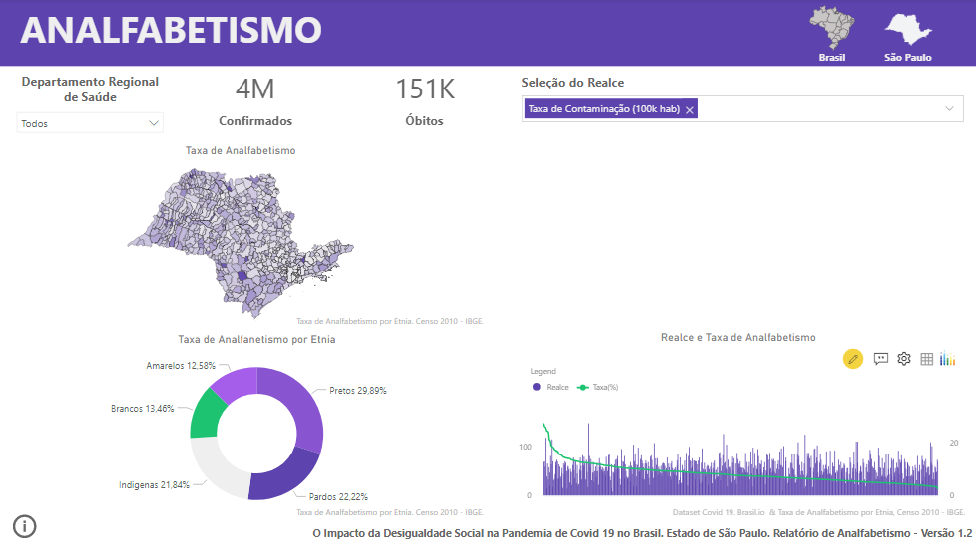
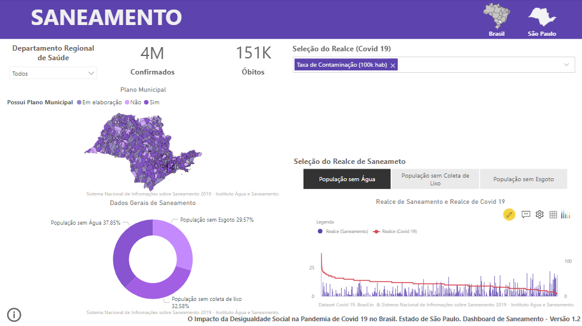
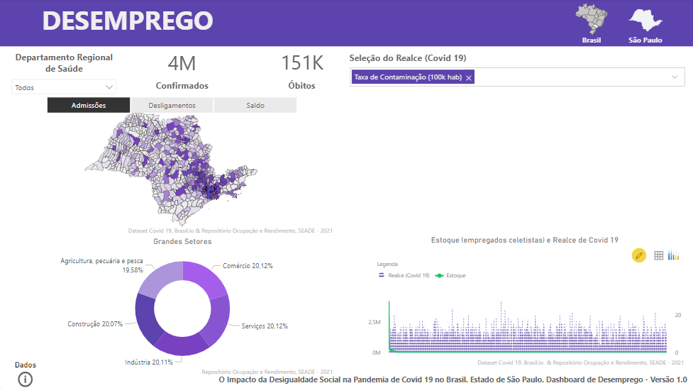

The impact of Social Inequality in the Covid 19
pandemic in the São Paulo state
Seeking to find a way to visualize the relationship that social inequality had with the scenario of the covid 19 pandemic in a clipping of the pandemic,
from around May 2021, the worst general situation in the country with the social contrast of the state of São Paulo. The final delivery consisted of 5
interactive Dashboards, namely the General Panel, Income, Illiteracy, Sanitation and Unemployment.
The tools used in the project were
Microsoft Power BI (excellent data analysis tool for being easy to use, including the ETL phases were almost exclusively done in the tool),
Google Spreadsheets, Notion and Miro, the latter two much more tied to the management part. The project started on October 2021 and ended on February 4, 2022,
approximately 5 months using the SCRUM methodology. The team consisted of me and Bruno during my Trainee period at SciTec Jr.
General Painel

The General Painel consists of 4 statistic visuals, 3 filters and 1 map, that demonstrate the relation of covid 19 data with extremaly poor counties and subnormal clusters, allowing us to extrapolate the general scenario of the country.
Yield

Yield dashboard help us to visualize the relation of monthly income and Covid 19 data by means of 4 statical visuals, 2 filters and 1 map.
Illiteracy

I was then able to create the Illiteracy dashboard, composed of 4 statistical visuals, 2 filters and 1 map, which demonstrate the relationship of Covid 19 data with 2010 census data.
Sanitation

The sanitation dashboard, through 4 statistical visuals, 3 filters and 1 map, brings us insights into how some general sanitation data, such as population without water, sewage and garbage collection, relate to Covid 19 data.
Unemployment

The unemployment dashboard, through 4 statistical visuals, 3 filters and 1 map, brings us insights into how covid 19 data relates to general unemployment data, such as Admissions, Terminations and sectors of the economy.
References
"Robô Autônomo Básico" em Portal do Arduino.2019-2019.
Consultado em 23/09/2019. Disponível na Internet em:
<
http://portaldoarduino.com.br/robo-autonomo-basico-com-sens
or-ultrassonico-hc-sr04/ >
"Universo Robôs" em Marlon Nardi, Youtube..2017-2019.
Consultado em 23/09/2019. Disponível na Internet em:
<
https://www.youtube.com/watch?v=saHiPjBxIR8 >
"Robô Autônomo SR2" em Seu Robô., 2019-2019.
Consultado
em 23/09/2019. Disponível na Internet em:
<
https://seurobo.com.br/robo-autonomo-sr-2-o-robo-autonomomais-eficiente-com-arduino-uno-e-ponte-h-l298n/
>